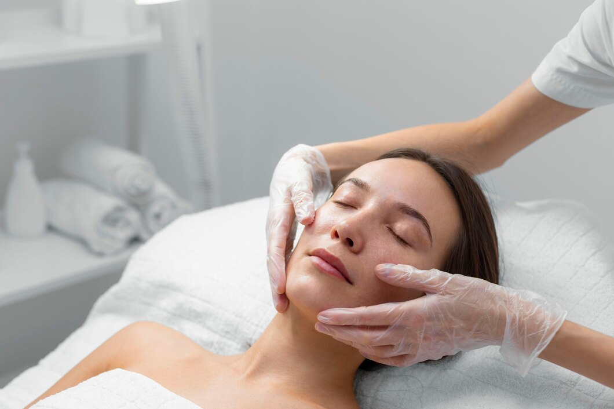
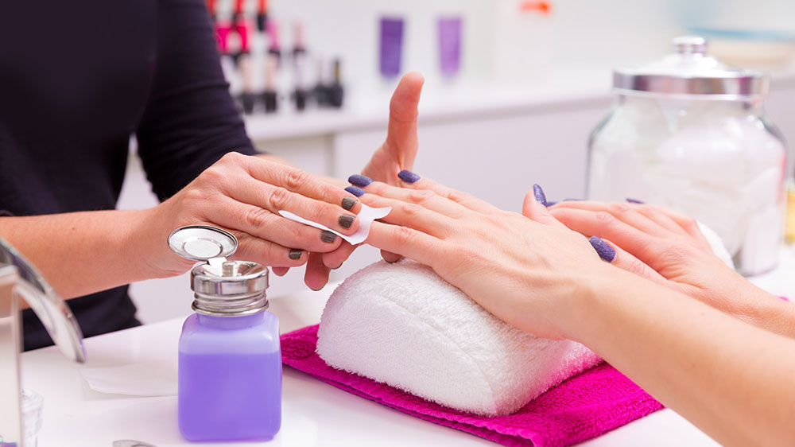

The Benefits of Regular Facials

A facial at our salon and spa is a multi-step treatment designed to rejuvenate and revitalize your skin.
It typically includes cleansing, exfoliation, extraction (if needed), massage, and a mask. Facials can
improve skin texture, unclog pores, boost circulation, and promote relaxation, leaving your skin glowing
and refreshed.
Choosing the Right Hairstyle for Your Face Shape

Finding the right hairstyle can dramatically enhance your appearance and boost your confidence. Whether
you prefer a classic cut or a trendy new style, our expert stylists can help you find the perfect look.
We consider your face shape, hair texture, and lifestyle to create a hairstyle that complements your
features and suits your personality. From bobs and lobs to layers and updos, we offer a range of styling
options to help you achieve your desired look.
The Art of Relaxation: Massage Therapy
Massage therapy offers a powerful way to relieve stress, reduce muscle tension, and improve overall
well-being. Our skilled massage therapists use various techniques, such as Swedish, deep tissue, and hot
stone massage, to address your specific needs. Whether you're seeking relaxation, pain relief, or injury
recovery, massage therapy can provide numerous benefits. It can improve circulation, reduce
inflammation, enhance sleep quality, and boost your mood. Experience the healing touch of massage and
discover a renewed sense of balance and vitality. Book your massage session today and prioritize your
well-being.
Nail Care Tips for Healthy and Beautiful Nails

Healthy and beautiful nails are an important part of overall self-care. Proper nail care not only
enhances your appearance but also prevents nail problems like brittleness, breakage, and infections. Our
nail services include manicures, pedicures, and nail enhancements, all performed with attention to
detail and hygiene. We use high-quality products and techniques to ensure your nails are healthy and
strong. From shaping and filing to cuticle care and polish application, we provide a relaxing and
pampering experience that leaves your nails looking their best. Regular nail care can also improve
circulation in your fingertips and promote healthy nail growth..